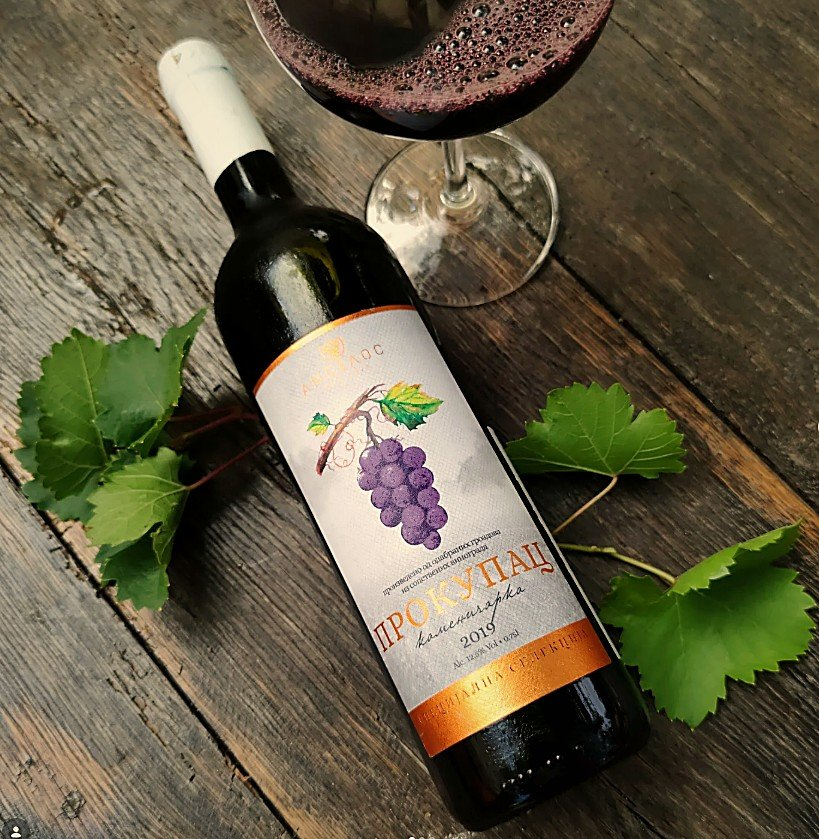
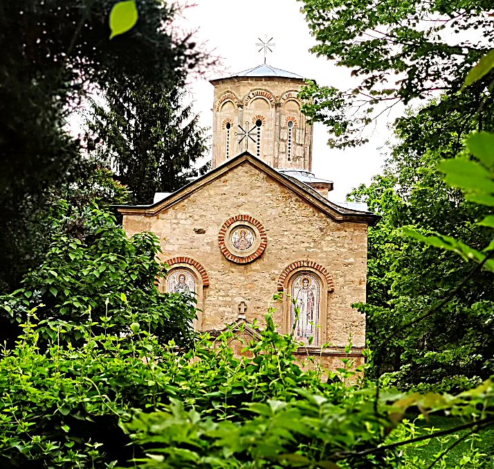
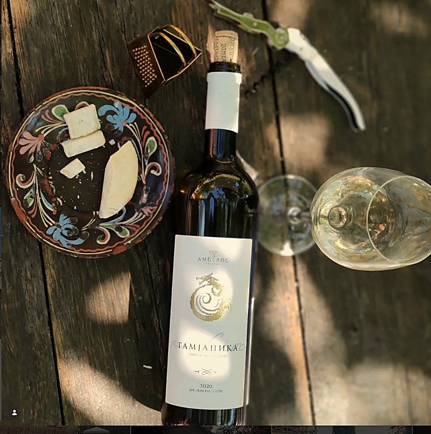
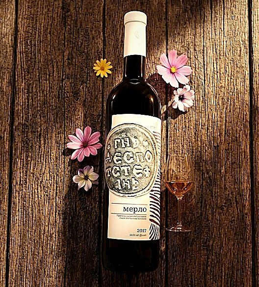
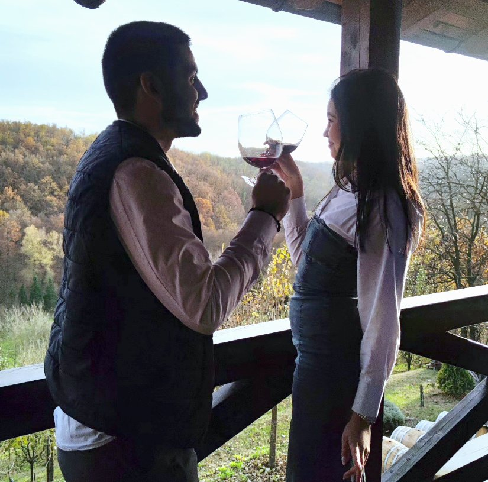
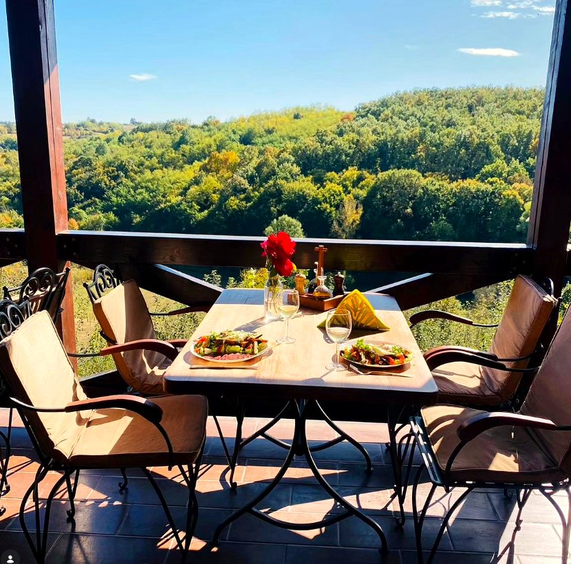

CrvenoProkupac
Autohtona srpska sorta. Toplo, zemljano vino sa notama višnje i suvog cveća.
Već generacijama monasi Koporina neguju lozu na obroncima iznad manastira. Svaka boca nosi mir, strpljenje i blagoslov ovog mesta.

Na sunčanim padinama oko manastira Koporin loza sazreva sporo i strpljivo. Grožđe se bere ručno, a vino odležava u hrastovim bačvama u hladu starih podruma.
Ne pravimo mnogo — pravimo pošteno. Svaka berba je drugačija, kao i svaka godina koju priroda podari.

CrvenoAutohtona srpska sorta. Toplo, zemljano vino sa notama višnje i suvog cveća.

BeloMirisno belo vino, cvetno i medno, sa blagom slatkoćom zrelog grožđa.

CrvenoAdut među crvenim vinima, ukusa kakav samo Merlot daje.
„Vino veseli srce čovekovo."
Posetite vinariju, prošetajte vinogradom i probajte vina uz priču o njihovom nastanku. Grupe i pojedinci dobrodošli su uz prethodnu najavu.
Zakaži posetu
